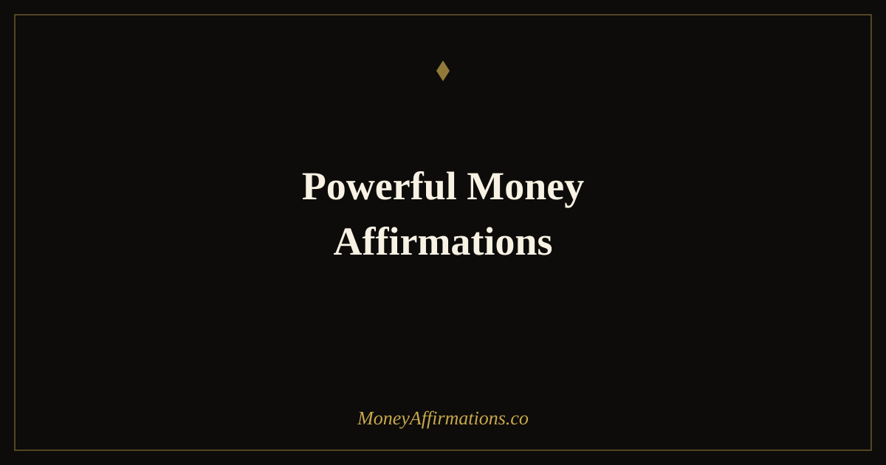

Powerful Money Affirmations: 30 Statements That Create Real Change

Not all affirmations are equally powerful. Some roll off the surface of the mind without leaving a mark. Others land differently — they create a flicker of hope, a moment of resistance, or a quiet recognition that something could genuinely be different. The ones that create real change share three qualities: they are specific enough to be meaningful, emotionally resonant enough to be felt, and just believable enough that the mind does not immediately reject them.
Powerful does not mean loud or forceful. It means effective at the level where financial beliefs are actually stored — in the body, in the nervous system, in the habitual stories you tell yourself when money comes up. These 30 powerful money affirmations were written to meet you at that level and move you toward a financial identity that serves you.
What makes a money affirmation powerful?
Three qualities separate affirmations that shift beliefs from affirmations that stay on a sticky note and do nothing. The first is specificity — a statement that names a real belief, fear, or desired change lands more precisely than a vague declaration. The second is emotional charge — if the affirmation produces no feeling at all, the brain has no reason to encode it differently from any other passing thought. The third is believability — a statement so far from your current reality that it triggers immediate disbelief will be rejected before it can take root.
The affirmations below are written to meet all three criteria. They are designed to stretch your thinking without snapping it. Some will feel easy; others will feel like a reach. The ones that feel like a reach are usually the most valuable — they are pointing to the exact belief that needs to shift.
30 powerful money affirmations
- I am someone who earns well, saves wisely, and grows wealth steadily.
- Money responds to my clarity, my confidence, and my consistent action.
- I am capable of building far more financial security than I have ever had.
- I make decisions about money from a place of calm authority, not fear.
- My income has room to grow, and I am actively creating that growth.
- I am worthy of being paid well for the value I bring to the world.
- Financial abundance is not luck — it is the result of aligned belief and action.
- I attract opportunities that support my financial goals naturally and consistently.
- I release the belief that money is difficult and replace it with the truth that money flows.
- I am building a financial life I am genuinely proud of, one decision at a time.
- My relationship with money is honest, healthy, and growing stronger every day.
- I no longer wait to feel worthy of wealth — I claim it now and grow into it.
- Every dollar I earn reflects the real value I create in the world.
- I face my finances with courage, clarity, and the confidence to take action.
- Wealth is available to me, and I am available to receive it.
- I am not my past financial mistakes — I am my next wise financial choice.
- My earning potential is not fixed; it expands as my skills and confidence expand.
- I give myself full permission to want more money and to go after it.
- Financial growth is something I create through habits, mindset, and focused effort.
- I handle money with the care and intention of someone who understands its value.
- The more financial confidence I build, the more money flows into my life.
- I am open to receiving money in generous, unexpected, and consistent ways.
- Prosperity is my natural direction, and every step I take moves me closer to it.
- I trust myself to make sound financial decisions even in uncertain times.
- My mindset around money is one of my most valuable and trainable assets.
- I deserve financial peace, and I am actively building the conditions for it.
- Money flows to me because I show up with intention, integrity, and open hands.
- I am becoming more financially capable, more financially confident, every single day.
- The financial life I want is already in motion — I keep showing up to meet it.
- I am powerful with money, and money works powerfully in my favor.
How to use these affirmations
The most effective approach with powerful affirmations is depth over quantity. Choose five statements from the list — ideally ones that produce some feeling when you read them, whether that is hope, discomfort, or quiet excitement — and work with those five for at least two weeks before rotating. Say each one slowly. Pause after it. Notice what the statement brings up in your body before moving to the next.
If an affirmation triggers resistance — a thought like "that's not true" or "I wish" — do not skip it. Resistance is usually a signal that you have found exactly the belief that needs attention. Breathe, soften, and repeat the statement more gently, as if you are offering it rather than demanding it. For affirmations that feel entirely unbelievable, use a bridge: start with "I am open to believing that..." until the statement becomes more available to you.
Morning is the most powerful time for this practice, before the day has shaped your mood. But a single slow repetition before a financial conversation, a salary negotiation, or a difficult money decision can be enough to shift your state meaningfully in the moment.
Why most affirmations do not work — and how these are different
The common criticism of affirmations is that they feel false — that repeating "I am rich" when your bank account says otherwise just creates cognitive dissonance rather than change. That criticism is valid for poorly written affirmations. When a statement is too far from your current belief, your mind rejects it immediately, and repetition only reinforces the rejection.
The neuroscience behind affirmations that do work is more precise than most people realise. The brain encodes beliefs through emotional repetition, not mechanical repetition. A statement repeated with genuine feeling — even a small amount of hope, recognition, or bodily resonance — activates the same neural circuits that are involved in actual experience. Over time, those circuits strengthen, and the belief encoded in the affirmation becomes more accessible as a default way of thinking.
This is why specificity matters. "I am wealthy" is too abstract for the brain to process with any emotional engagement. "I make decisions about money from a place of calm authority, not fear" is specific enough to produce a felt response — you can imagine what that would actually look like, feel the difference between that state and your current one, and begin to inhabit it incrementally. That gap — small enough to feel reachable, real enough to feel meaningful — is where powerful affirmations operate.
The statements in this collection are written to land in that gap. They are not promises or predictions. They are practiced truths — statements you are choosing to rehearse until they become the default story your mind tells about you and money.
Tips to make them work faster
- Pick the uncomfortable ones. The affirmations that provoke the most resistance are usually targeting the exact belief that needs to shift. Work with those first.
- Say them slowly. Speed is the enemy of depth. One affirmation repeated three times with full attention is worth more than thirty rushed through in two minutes.
- Write them by hand. Handwriting engages a different part of the brain than reading or speaking. Write your five chosen affirmations each morning to deepen the encoding.
- Find one piece of evidence. After each affirmation, pause and name one moment — past or present — that supports it. Evidence anchors belief more quickly than repetition alone.
- Use them before high-stakes moments. Repeat your most relevant affirmation before salary conversations, client calls, or any situation where financial confidence matters. Mindset preparation is real preparation.
Frequently Asked Questions
How do I know if a money affirmation is powerful enough?
If a statement makes you feel slightly uncomfortable, hopeful, or both at the same time, it is working at the right level. Affirmations that feel completely neutral have no charge — they will not create change. Affirmations that feel completely unbelievable will be rejected by your mind before they can land. The sweet spot is a statement that stretches your belief just enough that a part of you thinks: what if that were actually true?
Should I say all 30 affirmations every day?
No. Choosing five and going deep is far more effective than rushing through thirty. Repetition with feeling creates new neural pathways; repetition without feeling just creates noise. Pick the five that create the most response in your body, say them slowly, pause after each one, and let them land. Rotate to a new set every two to four weeks as your beliefs shift.
What if I do not believe the affirmation at all?
Start with a bridge statement: replace "I am" with "I am open to believing that" or "I am learning that." This removes the resistance that comes from stating something your mind flatly rejects, while still moving your thinking in a new direction. As the bridge statement becomes comfortable, shift toward the full affirmation. The goal is gradual believability, not forced positivity.
For the complete foundation of statements to work with alongside these, explore the full money affirmations collection and choose the ones that feel most relevant to where you are right now.